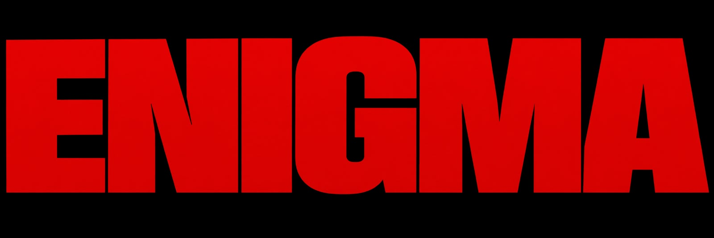

06
Behind
The Scenes
Beyond the final frame — preparation, movement and the moments in between.
01
Preparation — the details begin here.

Fashion Model
Selected work
View portfolioBased in Paris
Available Worldwide

A study in presence, movement and modern femininity — working across editorial, beauty, campaign and runway with a distinct visual perspective.
EDITORIAL · BEAUTY · CAMPAIGN · RUNWAY
The Portfolio
04 Categories
Editorial · Beauty · Campaign · Runway — scroll to travel
Selected Work
04
More than a face — defined by versatility, presence and transformation.
View full profile↗05
The same model. Four different expressions of character.
Drag
to explore
06
Beyond the final frame — preparation, movement and the moments in between.